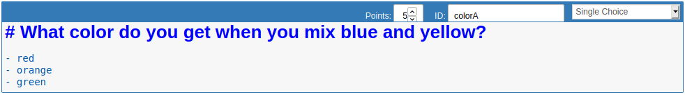
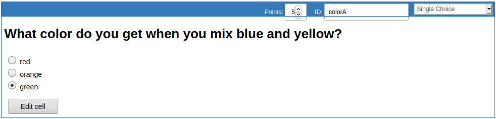
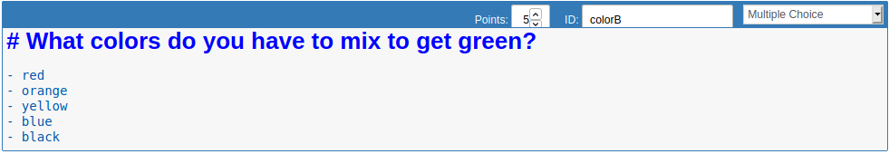
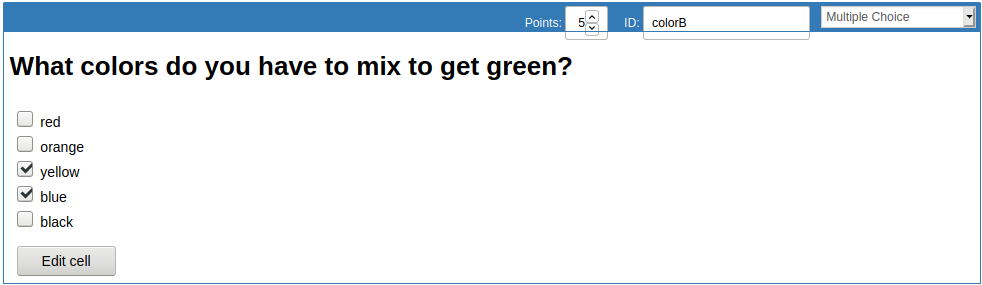

Multiple and single choice cells¶
E2xgrader comes with built-in support for multiple and single choice cells.
Create a single choice cell¶
To create a single choice cell, you first have to activate the create_assignment toolbar via View > Cell Toolbar > Create Assignment.
Single choice cells are based on markdown cells.
First switch the cell to markdown and then select Single Choice from the dropdown menu. Any markdown list will then be converted to choices.
Next you need to render the cell via the run button or shift-enter. Then select the correct option. This will be saved for autograding.
To edit the cell just click on the Edit Cell button.
Make sure to select one option or there will be a validation error when generating the release version of the assignment.
Create a multiple choice cell¶
To create a multiple choice cell, you first have to activate the create_assignment toolbar via View > Cell Toolbar > Create Assignment.
Multiple choice cells are based on markdown cells.
First switch the cell to markdown and then select Multiple Choice from the dropdown menu. Any markdown list will then be converted to choices.
Next you need to render the cell via the run button or shift-enter. Then select the correct option. This will be saved for autograding.
To edit the cell just click on the Edit Cell button.
If you do not select any choices for autograding, the student will get points for not selecting any option.
Grading scheme for multiple choice cells¶
When grading multiple choice cells there are some grading rules specific to German universities.
Additionally to getting points for correctly selecting the right answers, students have to get points for correctly not selecting the wrong answers.
Consider the following example question:
Which numbers are even? [5 points]
- 1
- 2
- 3
- 4
- 5
Assume the student selects the options marked with a plus:
Which numbers are even? [5 points]
- 1
+ 2
+ 3
+ 4
- 5
Then the student will receive 3 points. See the annotations per answer in the next block:
Which numbers are even? [5 Points]
- 1 [+ 1 point, correctly not selected]
+ 2 [+ 1 point, correctly selected]
+ 3 [- 1 point, incorrectly selected]
+ 4 [+ 1 point, correctly selected]
- 5 [+ 1 point, correctly not selected]
This can lead to situations, where the student will receive points for not selecting any answer.
Enabling choice cells for students¶
To make sure choice cells are correctly displayed on the student side, you can either install the e2xstudent extensions or just the extra_cell nbextension shipped with e2xgrader.
git clone https://github.com/DigiKlausur/e2xgrader
cd e2xgrader/nbextensions
jupyter nbextension install extra_cells --sys-prefix
jupyter nbextension enable extra_cells/main --sys-prefix